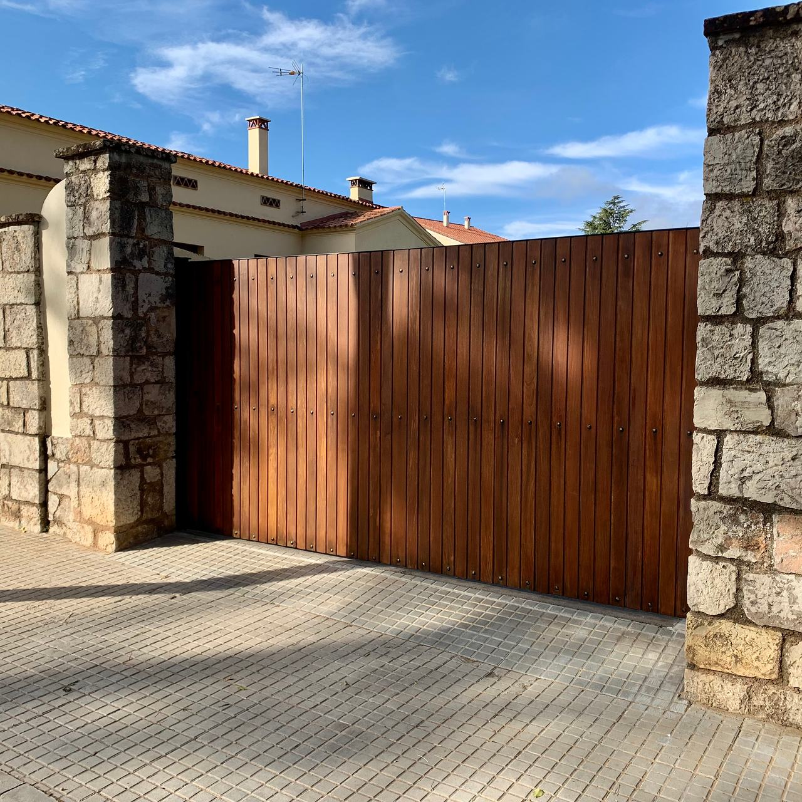

Pintura de estructuras metálicas y anticorrosión
El óxido no se tapa: se quita. Pintamos estructuras de nave, pilares, cerchas, portones y cerrajería con un sistema por capas pensado para el ambiente en el que van a estar.

Del acero al acabado
Una estructura bien protegida no lleva «una pintura», lleva un sistema: cada capa tiene una función y la duración depende de todas, empezando por la que no se ve.
Capas de un sistema anticorrosión, de la capa exterior al acero
Esmalte de acabado
Da el color y aguanta el sol, la lluvia y el roce. En exterior se suele usar poliuretano, que conserva mejor el color y el brillo.
Capa intermedia
Aporta espesor. La protección depende en buena parte del espesor total de pintura seca, y no se consigue con una sola mano gruesa.
Imprimación anticorrosiva
La única capa en contacto con el metal: frena la corrosión y da agarre a las demás. Sobre acero galvanizado se usa una imprimación de adherencia específica.
Preparación de la superficie
Quitar el óxido, la cascarilla y la pintura suelta, con chorreado o con medios mecánicos. Es el paso que más decide cuánto dura todo lo demás.
Acero
Pilares, vigas, cerchas, chapa, portones, barandillas o depósitos.
Dos normas que conviene conocer
Si tienes que comparar presupuestos, pregunta por estas dos cosas: con qué grado se prepara el acero y para qué ambiente está pensado el sistema.
ISO 8501-1 · Grado de preparación
Describe cómo de limpio queda el acero antes de pintar. St 2 y St 3 son limpiezas manuales o mecánicas (cepillo, disco); Sa 2½ es un chorreado que deja el metal casi blanco. Cuanto más exigente el ambiente, más exigente la preparación.
ISO 12944 · Categoría de corrosividad
Clasifica el ambiente de C1 (interior seco y calefactado) a C5 y CX (industria agresiva, costa). Una nave sin calefacción con condensaciones suele estar en C2 o C3; cerca del mar o con procesos químicos, más arriba. El sistema se elige para ese ambiente.
Portones entre piedra
Portones metálicos de lamas y de doble hoja acabados en tono óxido, entre pilares de piedra. Pulsa una foto para verla grande.
Sobre óxido y pintura
¿Se puede pintar la estructura sin parar la nave?
Normalmente sí, por tramos. Se protege o se despeja la zona de debajo, se trabaja con plataforma elevadora y se avanza por crujías, como explicamos en la parada por zonas. Si hay que chorrear, el polvo obliga a aislar mejor la zona o a buscar un momento sin actividad.
¿Se puede pintar encima de la pintura vieja?
Si está bien adherida y sin óxido debajo, sí: se limpia, se lija para dar agarre y se tratan los puntos oxidados hasta el metal. Si se levanta en placas o el óxido sale por debajo, hay que retirarla.
¿Cómo se pinta el acero galvanizado?
El galvanizado es muy liso y la pintura normal se despega. Hay que desengrasarlo, matizarlo con un lijado o un barrido suave y aplicar una imprimación de adherencia específica para galvanizado antes del acabado.
¿Cada cuánto hay que repintar?
Depende del ambiente, del sistema y de cómo se preparó el acero. Lo práctico es revisar la estructura de vez en cuando y tratar los puntos de óxido en cuanto aparecen: un retoque a tiempo evita repintarlo todo.
¿Óxido a la vista?
Mándanos fotos de la estructura (una general y alguna de cerca de las zonas oxidadas), la altura aproximada y si la nave está en uso. Te decimos cómo lo abordaríamos.